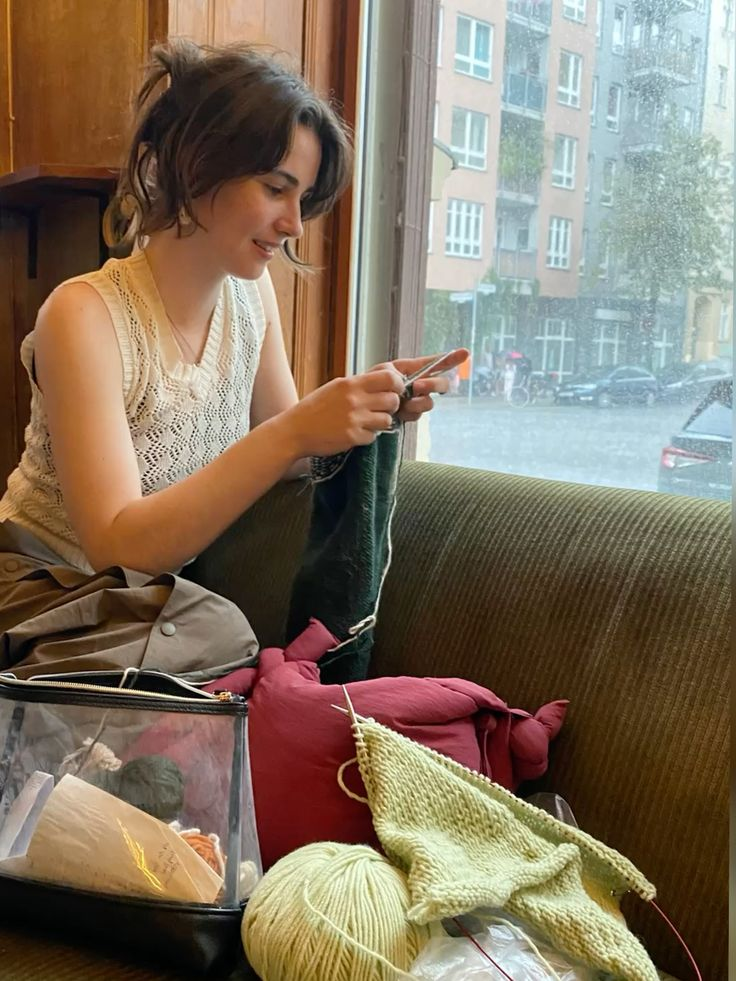
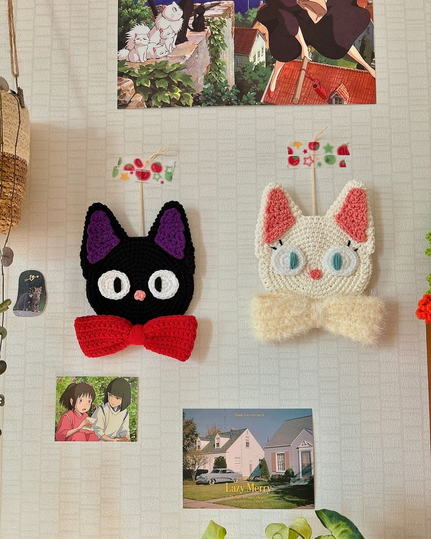
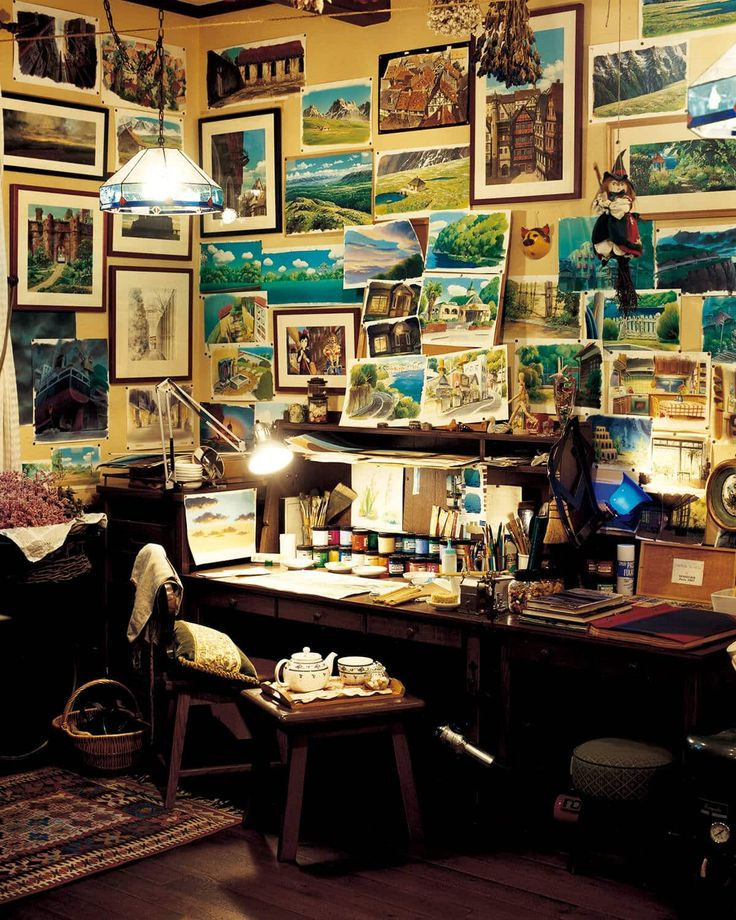
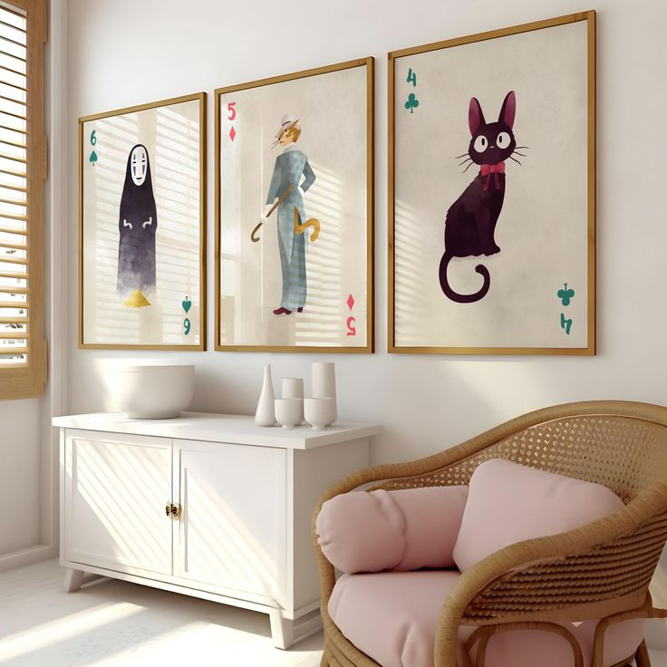
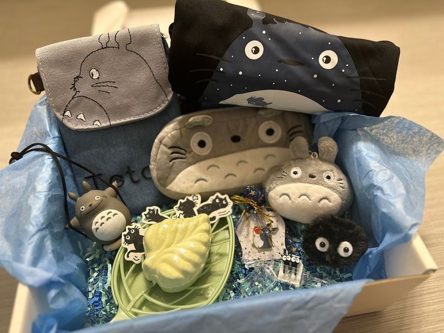
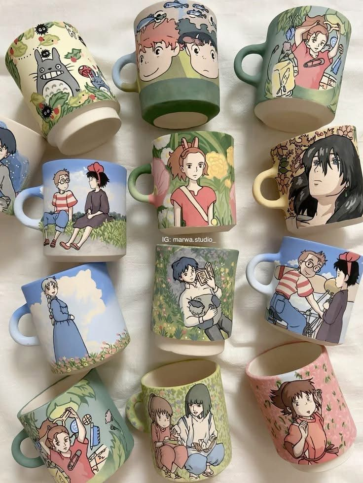
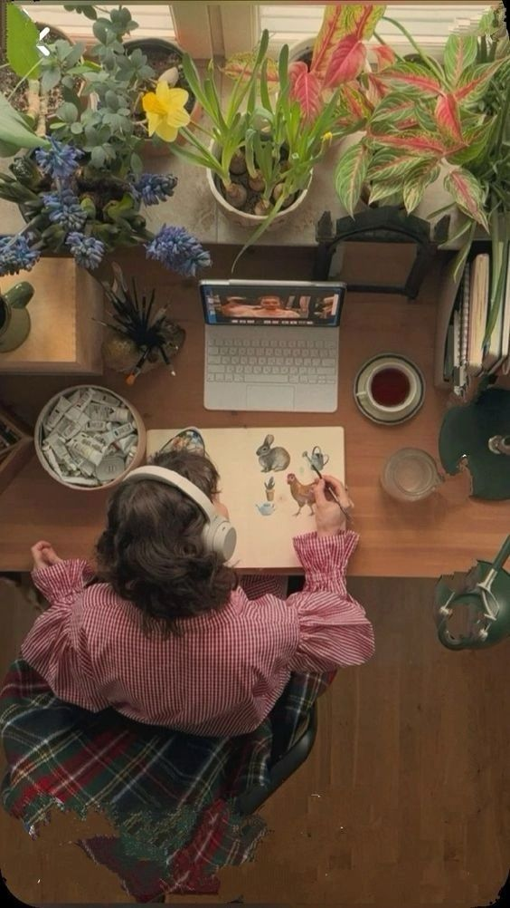

物語 · Our Story
Every stitch, every brushstroke, every carefully wrapped parcel is an act of quiet love — for craft, for nature, and for the magic that lives in the everyday details most people rush past.

始まり · How it began
In the autumn of 2019, Yuki Tanaka sat by her apartment window watching the rain fall on temple rooftops, a half-finished amigurumi in her hands and My Neighbour Totoro playing softly in the background.
She'd been crocheting since childhood — her grandmother had taught her using thick mountain wool — but that afternoon something clicked. She wanted to make things that held the same quiet enchantment as her favourite films: handmade, imperfect, deeply alive.
Mori no Mise (森の店, meaning "forest shop") opened its first Etsy listing in January 2020. Within three months, the waiting list was six weeks long.
Visit the Shop ✦価値観 · Values
The principles that guide every piece we make.
We never rush. Every item is made at its own pace, without deadlines chasing the craft.
Cotton, wool, linen, clay — we choose natural fibres and materials that breathe and age beautifully.
Yarn offcuts become stuffing. Paper scraps become tags. We waste almost nothing in the studio.
The hidden embroidery on a plushie's paw. The hand-stamped tissue paper. Details no one will notice — until they do.
We collaborate with local artists, pay fair wages, and donate 5% of every sale to reforestation.
We design every piece knowing it might be someone's most treasured gift. That responsibility delights us.
アトリエ · The Studio





作り方 · The Process
A walk through Arashiyama bamboo forest, a childhood film rewatched, a pressed leaf found on the doorstep. Ideas come slowly and we trust them.
Yuki sketches every design by hand in a dog-eared notebook. No software at this stage — just pencil, eraser, and instinct.
The first prototype is made slowly, often ripped out and restarted. We don't photograph failures — but they're the most important step.
Each production piece is made individually, by hand. No two are exactly alike, and we think that's the point.
Tissue, a hand-stamped tag, a dried flower, a handwritten note. Packing day is our favourite day in the studio.

私たちについて
A very small team with very big hearts.
Founder & Lead Maker
Crocheter, watercolourist, compulsive re-watcher of Spirited Away. Responsible for most of the magic.
Ceramicist
Former potter at Kyoto's oldest studio. She says the clay remembers the hands that shape it.
Print & Packaging
Graphic designer turned print-maker. Designs every tag, tissue stamp, and thank-you card by hand.
"Opening a Mori no Mise parcel is like stepping into a Ghibli film. You slow down. You breathe. You remember what magic actually feels like."
— Mei C., Tokyo · ★★★★★
さあ、見てみましょう
Every item in our shop carries a little piece of the studio's story. We hope you find something that feels like it was always meant to be yours.